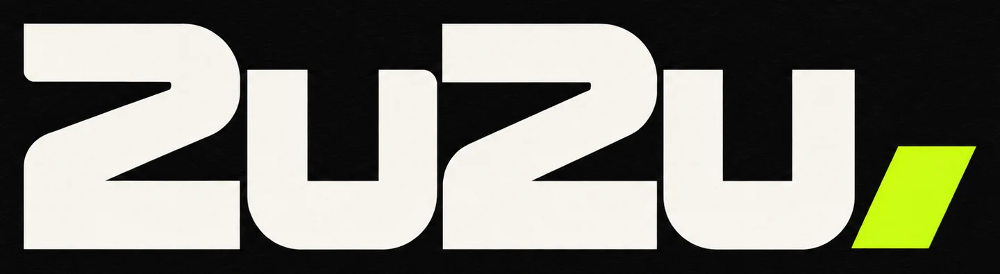

LeafCal
Gemini ile yemek fotoğraflarını tanıyan, barkod okutan ve kalori, makro, su ile egzersiz takibi sunan mobil uygulama.
YAZILIM GELİŞTİRİCİ · GİRİŞİMCİ

Fikirleri çalışan ürünlere dönüştürüyorum.
Mobil uygulamalar, oyunlar ve web siteleri geliştiriyorum.
Gemini ile yemek fotoğraflarını tanıyan, barkod okutan ve kalori, makro, su ile egzersiz takibi sunan mobil uygulama.
Hızlı ve sade bir bulmaca deneyimi sunan mobil Sudoku oyunu.
Hedefi doğru anda vurarak kendi rekorunu geçmeye çalıştığın hızlı bir refleks oyunu.
İşletmelere NFC kart, dijital kartvizit ve QR menü çözümleri sunan girişim.
Kil çıkar, tuğla üret ve tek başına ya da arkadaşlarınla piramit inşa et. Konveyörler ve yardımcılarla işi otomatikleştir.
Dört pistte ralli arabalarıyla yarış. Kazanmak için dört tekeri hareketli çekicinin üzerinde üç saniye tut.
Mod ve hile seçenekleri sunan bir Minecraft başlatıcısı.
Arcade oyunları oynayarak ve görevleri tamamlayarak oyunlar için dijital E-PIN kodları kazanabileceğin ödül platformu.
Kitaplarını, ayraçlarını, notlarını ve okuma ilerlemeni cihazında saklayan kişisel PDF kitaplığı.
HKB Optik’in şube ve garanti bilgilerini sunan dijital kartı.
Fiyatları, içerikleri ve alerjen bilgilerini gösteren dijital restoran menüsü.
miskets kurucu ortağı için doğrudan iletişim bağlantıları içeren dijital kartvizit.